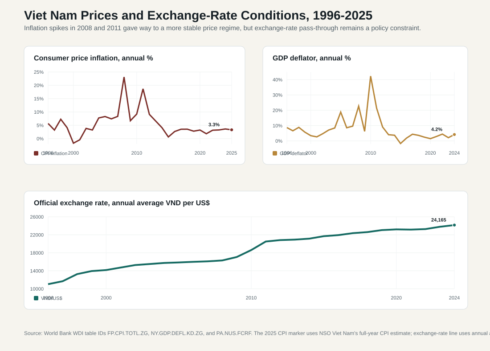
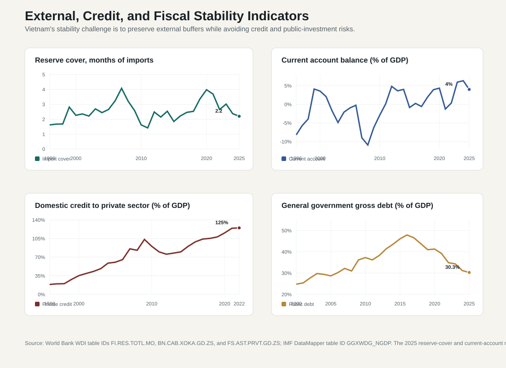

9.2 Inflation, Exchange-Rate Management, and Macro Stability
ASEAN comparative lens (2026). Vietnam should be read in ASEAN comparison as ASEAN's most prominent party-led, export-manufacturing upgrading case. Unlike the Philippines' service-remittance profile, Thailand's older industrial-tourism base, Malaysia's resource-industrial federal structure, or Indonesia's archipelagic domestic-market scale, Vietnam's comparative issue is how a socialist party-state manages very open global production networks. For this section, the regional comparison should compare growth, inflation, exchange-rate exposure, productivity, and sectoral structure with ASEAN's manufacturing, services, tourism, resource, and corridor-based models. Local comparable indicators show: population 100.99 million (2024), rank 3 among the nine ASEAN reports in this workspace; GDP US$476.39 billion (2024), rank 4 among the nine ASEAN reports in this workspace; GDP per capita US$4,717 (2024), rank 5 among the nine ASEAN reports in this workspace; real GDP growth 7.09% (2024), rank 1 among the nine ASEAN reports in this workspace; government effectiveness 0.09 (2023), rank 6 among the nine ASEAN reports in this workspace; internet use 84.15% (2024), rank 4 among the nine ASEAN reports in this workspace. Use `sources/documents/regional/asean_comparative_lens_2026.md` together with ASEANstats, ASEAN Secretariat materials, and the country processed-indicator files before making cross-ASEAN claims.
Macroeconomic stability is the operating discipline behind Vietnam's growth model. The country is highly open, export-oriented, import-intensive, and credit-dependent. That means inflation, exchange-rate pressure, external buffers, credit growth, and fiscal policy cannot be analyzed separately. A shock to global demand can affect exports; a depreciation of the dong can raise import costs; higher food, housing, electricity, health-care, or education prices can affect household welfare; rapid credit growth can support investment but also feed real-estate and balance-sheet risk.
The core question is therefore not whether Vietnam has achieved stability in a narrow technical sense. It is whether stability is strong enough to support the next stage of development: productivity upgrading, domestic supplier development, infrastructure investment, financial-sector resilience, and protection of household purchasing power. Vietnam's recent record is comparatively strong, but the indicators show a more demanding policy environment than the simple phrase "macro stability" suggests.

9.2.1 Inflation as a Welfare, Credibility, and Stability Indicator
Inflation is not only a monetary statistic. In Vietnam, it is a social-stability variable because food, fuel, transport, housing, education, and health-care prices directly affect household welfare. It is also a credibility variable because firms and households make wage, price, borrowing, and investment decisions based on whether they believe the authorities can keep inflation contained.
World Bank WDI data show three inflation regimes. The first was the post-stabilization and early opening period, when inflation was much lower than the extreme volatility of the late planned economy but still uneven. From 1996 to 2007, CPI inflation averaged about 4.8 percent, with deflation in 2000 and higher price pressure in some years. This was a period of rapid market transition, trade opening, and institutional adjustment.
The second regime was the high-inflation shock period around the global financial crisis and its aftermath. CPI inflation reached 23.1 percent in 2008 and 18.7 percent in 2011. The GDP deflator also surged, reaching very high levels in the same period. This phase matters because it shows the danger of rapid credit growth, commodity-price pressure, exchange-rate adjustment, and policy stimulus interacting at the same time. High inflation can quickly reduce real incomes, weaken confidence, and force monetary tightening.
The third regime is the more stable period after 2012. CPI inflation averaged about 4.1 percent during 2012-2019 and about 3.0 percent during 2020-2024. WDI reports CPI inflation at 3.25 percent in 2023 and 3.62 percent in 2024. The National Statistics Office reported that average CPI rose 3.31 percent in 2025, while core inflation rose 3.21 percent, meeting the National Assembly's inflation objective. This is a notable achievement because 2025 also saw strong GDP growth, high export and import growth, and rising service activity.
The policy interpretation is straightforward: Vietnam has learned to operate a much more stable price regime than in the late 2000s, but price stability remains exposed to food prices, administered service prices, electricity tariffs, housing costs, wage growth, natural disasters, and import prices. Inflation management is therefore partly monetary policy, partly supply management, partly fiscal policy, and partly administrative coordination.
9.2.2 Consumer Price Inflation versus GDP Deflator
CPI inflation measures consumer prices faced by households. The GDP deflator measures prices of domestically produced output. Reading both indicators together helps separate household cost-of-living pressure from broader nominal price movements in the production economy.
The two indicators moved together during the major shock years. In 2008, CPI inflation reached 23.1 percent and the GDP deflator rose 22.7 percent. In 2011, CPI inflation reached 18.7 percent and the GDP deflator rose 21.4 percent. These were not small household price fluctuations; they were economy-wide nominal stress episodes.
After 2012, both indicators stabilized. CPI inflation fell to 0.6 percent in 2015, while the GDP deflator was negative in the same year. From 2020 to 2024, CPI inflation averaged about 3.0 percent and the GDP deflator also averaged about 3.0 percent. The similarity is important because it suggests that recent price stability was not only a statistical artifact of consumer basket composition. It reflected a broader stabilization of nominal conditions.
However, the two indicators also point to different policy concerns. CPI inflation matters most for household welfare and wage bargaining. The GDP deflator matters for nominal GDP, fiscal ratios, enterprise revenue, and real growth interpretation. If nominal growth rises because prices rise, the development effect is weaker than if real productivity rises. Vietnam's macro policy therefore needs to distinguish price-led nominal expansion from productivity-led real expansion.
9.2.3 Exchange-Rate Management in an Import-Intensive Export Economy
Vietnam's exchange-rate problem is delicate because the economy is both export-oriented and import-intensive. A weaker dong may help some exporters, but many exporters also import components, machinery, fabric, fuel, chemicals, and technology. Depreciation can therefore raise input costs and inflation pressure even while supporting export competitiveness. A stronger dong may reduce import costs, but it can also weaken price competitiveness and encourage external imbalances if domestic demand is strong.
The WDI annual average official exchange rate shows a gradual long-run depreciation of the dong against the U.S. dollar. The rate was about VND 11,033 per USD in 1996, VND 14,168 in 2000, VND 20,510 in 2011, VND 23,050 in 2019, VND 23,208 in 2020, VND 23,272 in 2022, VND 23,787 in 2023, and VND 24,165 in 2024. IMF's selected indicators report the end-period nominal exchange rate at VND 25,485 per USD in 2024.
The policy lesson is not that depreciation is always bad. Vietnam needs exchange-rate flexibility because external shocks must be absorbed somewhere: through reserves, interest rates, prices, fiscal support, output, or the exchange rate. The IMF's 2025 Article IV assessment emphasized that greater exchange-rate flexibility is important for adjustment to external shocks. The constraint is pass-through: if depreciation quickly raises import costs, energy prices, producer costs, or inflation expectations, the State Bank of Vietnam has less room to support growth through easier monetary policy.
9.2.4 Monetary Policy: Growth Support under Limited Easing Space
Vietnam's monetary authorities operate in a system where bank credit is central to growth. Credit supports firms, households, construction, real estate, infrastructure, trade finance, and consumption. But monetary easing can be risky when growth is already strong, inflation pressure is present, and exchange-rate pressure exists.
The IMF's 2025 Article IV selected indicators show credit to the economy growing by 14.9 percent at end-2024 and projected at 15.0 percent at end-2025. This is rapid enough to support output and investment, but it also raises the question of credit allocation. If credit flows into productive manufacturing, logistics, energy, export capacity, technology adoption, and working capital for viable firms, it can support long-term growth. If it flows into speculative real estate, weak corporate balance sheets, or low-return projects, it can create future financial stress.
This is why the policy mix matters. IMF directors judged that room for monetary easing was limited and that inflation and foreign-exchange risks should be closely monitored. They also argued that fiscal policy could play a larger role if growth slowed. In practical terms, Vietnam should not rely on credit expansion as the default growth instrument. It should use monetary policy to maintain liquidity and confidence while using fiscal and structural policy to address infrastructure, public investment, skills, and productivity.

9.2.5 Foreign-Exchange Reserves and External Buffers
Foreign-exchange reserves are the buffer that allows an open economy to manage currency pressure, import needs, debt service, and confidence shocks. WDI reserve-cover data show that Vietnam's reserves have not been uniformly high. Reserve cover was about 1.6 months of imports in 1996, 2.3 months in 2000, 3.2 months in 2008, 1.4 months in 2011, 2.5 months in 2012, 1.9 months in 2015, 3.4 months in 2019, 4.0 months in 2020, 3.0 months in 2023, and 2.4 months in 2024.
IMF selected indicators show gross international reserves at USD 83.1 billion in 2024 and projected USD 79.3 billion in 2025. In months of prospective goods-and-services imports, the IMF indicator falls from 2.4 months in 2024 to 2.2 months in 2025. That does not mean Vietnam faces an immediate external crisis, but it does mean the policy authorities have to treat reserve adequacy carefully in a highly open economy.
The external buffer problem is tied to the exchange-rate problem. If the authorities defend the currency too aggressively, reserves can fall. If they allow faster depreciation, inflation and balance-sheet pressures can rise. If they raise interest rates to defend the currency, credit and domestic demand can weaken. This is why exchange-rate flexibility, reserve management, and monetary credibility are part of the same macro-stability system.
9.2.6 Current Account Balance: Strength with Exposure
The current account shows whether the economy is generating external surplus or deficit through trade, services, income flows, and transfers. Vietnam's current account has moved through distinct phases. WDI reports a deficit of 8.2 percent of GDP in 1996 and a very large deficit of 10.9 percent in 2008. After adjustment, the current account moved into surplus in several years, including 4.8 percent in 2012, 3.9 percent in 2019, 4.3 percent in 2020, 5.9 percent in 2023, and 6.3 percent in 2024. IMF selected indicators report a 6.6 percent current-account surplus in 2024 and project a surplus of 4.0 percent in 2025.
This looks strong, but it should not be read as pure autonomy. Vietnam's external position depends heavily on export manufacturing, imported intermediate inputs, FDI firms, remittances, tourism, and global demand. A current-account surplus can coexist with large import needs and profit repatriation by foreign firms. The correct interpretation is that Vietnam has external strength, but that strength is embedded in global production networks.
The 2025 context makes this point clear. Strong export frontloading and large trade flows supported growth, but future trade-policy uncertainty could reduce the surplus. Macro stability therefore requires more than a positive current account. It requires diversified export markets, stronger domestic suppliers, credible rules of origin, logistics resilience, and the ability to absorb shifts in global electronics and manufacturing demand.
9.2.7 Credit Depth and Financial-Sector Risk
Domestic credit to the private sector is a useful indicator of financial deepening. WDI data show private credit rising from about 18.7 percent of GDP in 1996 to 35.3 percent in 2000, 82.9 percent in 2008, 103.3 percent in 2009, 90.4 percent in 2015, 108.0 percent in 2019, 115.5 percent in 2020, 124.3 percent in 2021, and 125.0 percent in 2022. This is a dramatic change. Vietnam has moved from a shallow financial system to a bank-centered economy where credit conditions strongly affect investment, real estate, firm survival, and household welfare.
Financial deepening is not itself a problem. It supports development when credit finances productive firms, export capacity, infrastructure, SMEs, technology adoption, and household smoothing. The risk is that bank credit can also amplify real-estate cycles, corporate leverage, connected lending, maturity mismatch, and nonperforming loans. The IMF's 2025 Article IV assessment explicitly warned that domestic financial stress could re-emerge from tighter financial conditions and high corporate indebtedness.
This means macro stability depends on banking supervision, provisioning, corporate-bond regulation, real-estate market transparency, insolvency frameworks, and crisis preparedness. Credit growth must be judged by allocation quality, not only by aggregate speed.
9.2.8 Public Debt and Fiscal Space
Fiscal indicators are part of macro stability because Vietnam's next growth stage requires large public investment in transport, energy, digital infrastructure, water, climate adaptation, education, and health. Public debt is moderate compared with many emerging economies. IMF DataMapper's general-government gross debt series places debt around the low-30-percent-of-GDP range in 2024-2025, while the IMF's 2025 Article IV selected indicators report public and publicly guaranteed debt at 31.3 percent of GDP in 2024 and a projected 32.0 percent in 2025.
The central fiscal issue is therefore not an immediate debt crisis. It is execution quality. Vietnam has fiscal space relative to many peers, but using that space well requires stronger public investment management, appraisal, procurement, land clearance, intergovernmental coordination, fiscal transparency, and control of contingent liabilities from SOEs, banks, public-private partnerships, and local projects.
Fiscal policy can support growth more safely than monetary policy when inflation and exchange-rate risks limit monetary easing. But fiscal expansion is useful only if it raises potential growth. Low-return projects, delayed disbursement, fragmented provincial priorities, or weak maintenance can convert fiscal space into waste.
9.2.9 Macro Stability as a Political-Administrative Capacity
Vietnam's macro stability should be understood as a political-administrative achievement, as much as a political-administrative achievement as a central-bank function. Inflation management requires ministries that monitor food supply, energy tariffs, health-care prices, education fees, transport costs, and disaster impacts. Exchange-rate management requires coordination between the State Bank of Vietnam, fiscal authorities, trade agencies, state-owned enterprises, banks, and major importers and exporters. Public investment requires ministries and provinces to prepare projects, clear land, procure transparently, and disburse effectively.
This is why macroeconomic management belongs in a book about politics and administration. The Vietnamese party-state derives part of its performance legitimacy from growth and stability. If inflation rises, credit stress spreads, or exchange-rate pressure weakens confidence, the problem becomes political as well as economic. Conversely, credible stability expands room for long-term development policy.
9.2.10 Indicator-by-Indicator Interpretation
| Indicator | Main trend | Interpretation | Policy warning |
|---|---|---|---|
| CPI inflation | 23.1% in 2008; 18.7% in 2011; 3.62% in 2024; 3.31% in 2025 | Vietnam moved from episodic high inflation to a more stable price regime. | Food, energy, housing, health-care, wage, and exchange-rate pressures can still pass through to households. |
| GDP deflator | 22.7% in 2008; 21.4% in 2011; 4.16% in 2024 | Economy-wide nominal pressure has stabilized since the early 2010s. | Nominal expansion should not be confused with productivity-led real growth. |
| Exchange rate | Annual average VND/USD moved from about 11,033 in 1996 to 24,165 in 2024 | Gradual depreciation reflects adjustment in an open economy. | Excessive depreciation can raise import costs, inflation, and balance-sheet stress. |
| Reserve cover | 4.0 months of imports in 2020; 2.4 in 2024; IMF projection 2.2 in 2025 | External buffers remain important but not unlimited. | Defending the currency too strongly can use reserves; allowing depreciation can raise inflation. |
| Current account | 6.3% of GDP surplus in WDI 2024; IMF projection 4.0% in 2025 | External balance is strong after earlier deficit episodes. | Surplus depends on export manufacturing, FDI networks, and global demand conditions. |
| Private credit | About 18.7% of GDP in 1996; 125.0% in 2022 | Financial deepening has become central to growth. | Credit allocation, real estate, corporate leverage, and bank supervision are core macro risks. |
| Public debt | Low-30-percent-of-GDP range in 2024-2025 | Debt level is moderate and fiscal space exists. | Public investment quality, contingent liabilities, and fiscal transparency matter more than the headline debt ratio alone. |
9.2.11 Policy Implications
Vietnam's macroeconomic strategy should combine stability with structural upgrading. Monetary policy should remain credible enough to anchor inflation expectations, but flexible enough to manage liquidity and external shocks. Exchange-rate policy should allow adjustment while avoiding disorderly depreciation and excessive pass-through into domestic prices. Credit policy should support productive investment and SMEs while restraining speculative real-estate and corporate-leverage risks.
Fiscal policy should carry more of the growth-support burden when monetary space is limited. But that means better public investment, not larger spending envelopes by themselves. Infrastructure, power reliability, logistics, climate adaptation, digital systems, education, and health investments should be selected by their contribution to productivity and resilience.
The larger conclusion is that Vietnam's macro stability is strong but conditional. It rests on controlled inflation, credible exchange-rate management, adequate external buffers, disciplined credit growth, and effective fiscal execution. If those elements reinforce one another, Vietnam can use stability as a platform for higher-value growth. If they diverge, the same open and credit-dependent growth model that supports rapid expansion can transmit inflation, external, and financial stress very quickly.